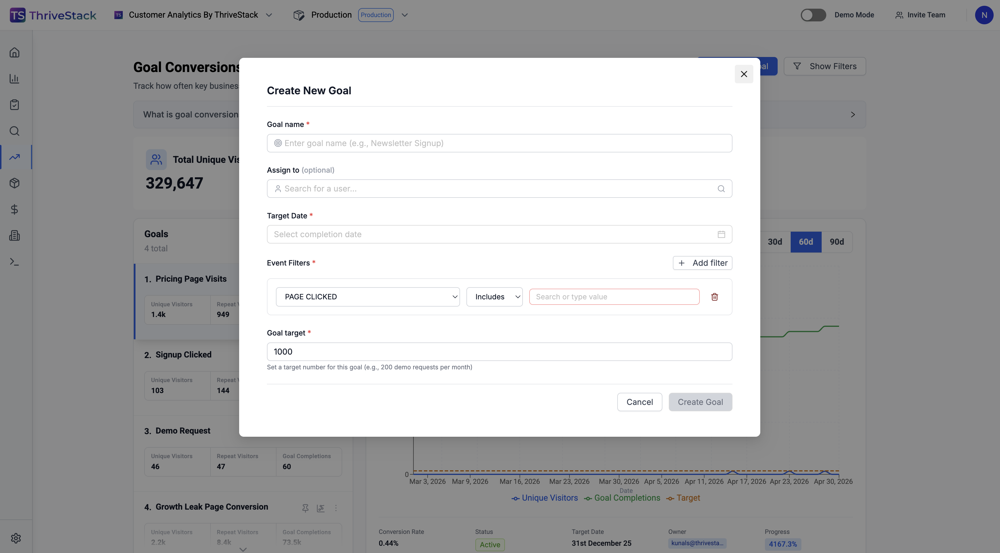
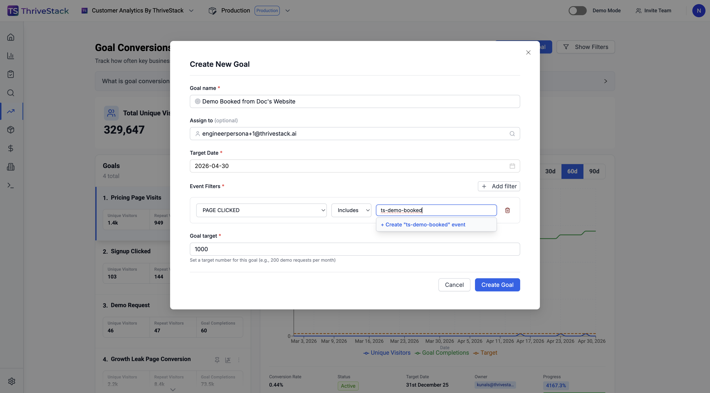
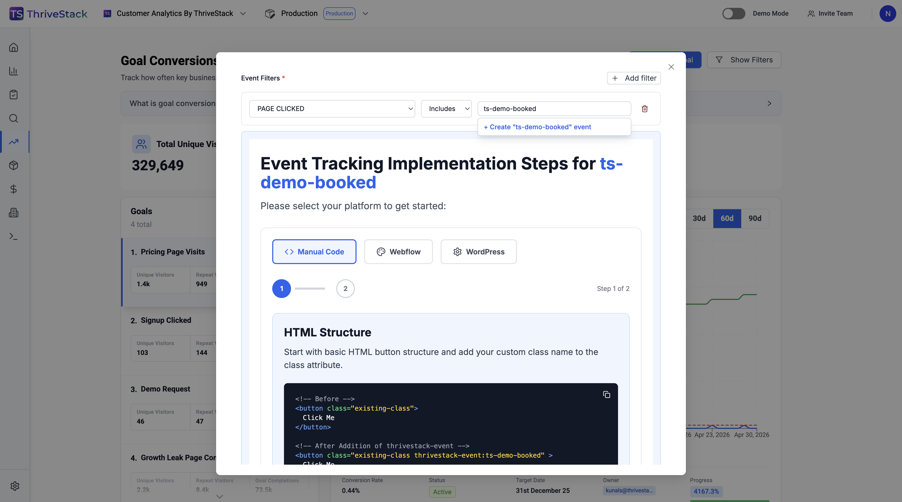
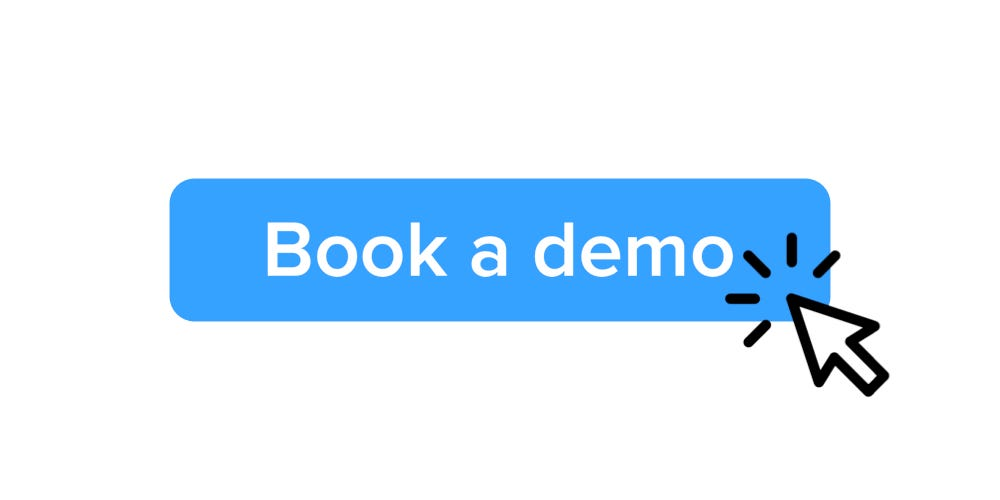
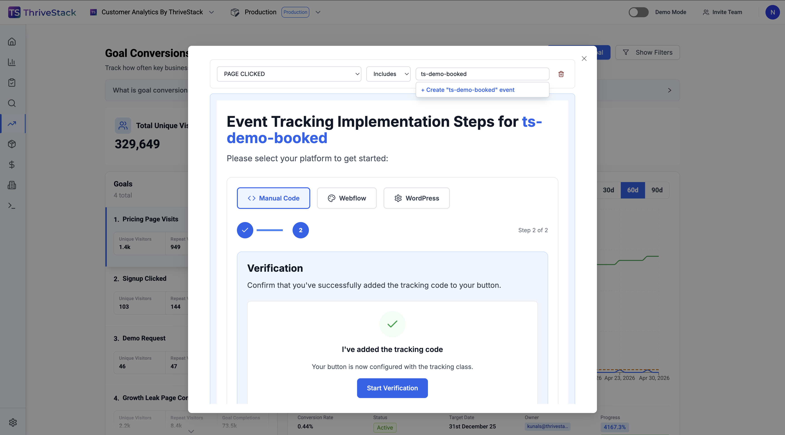
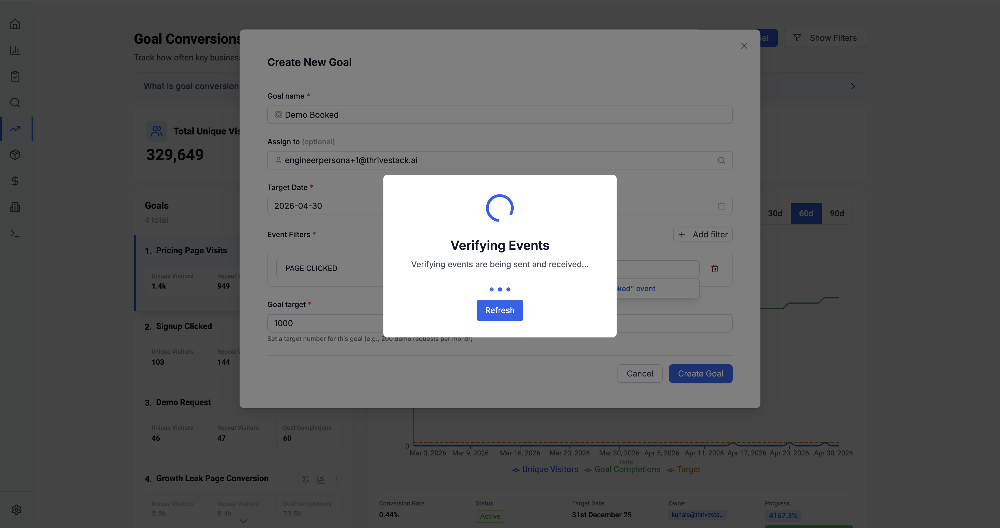
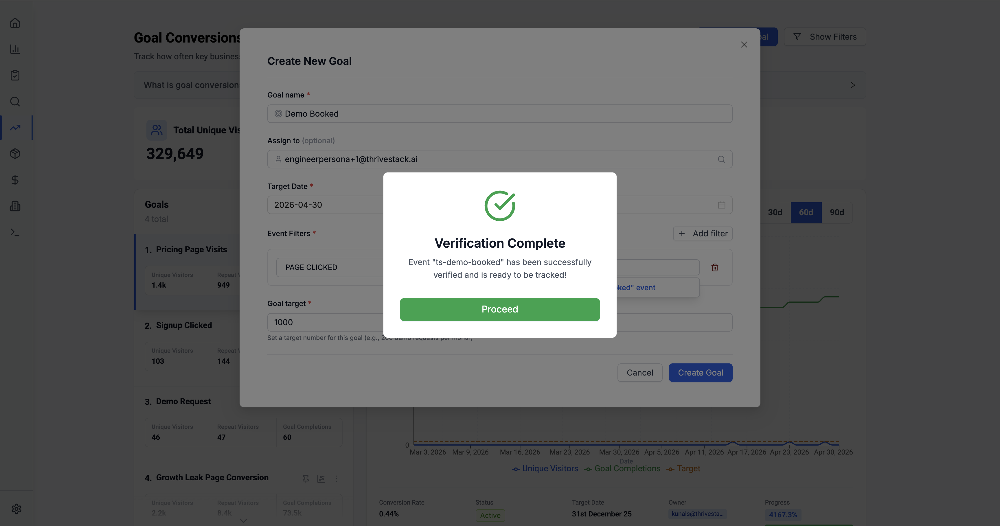
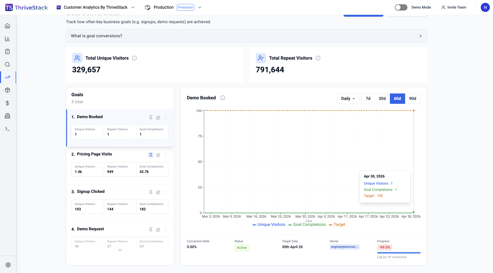
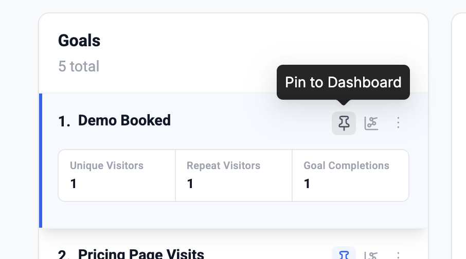
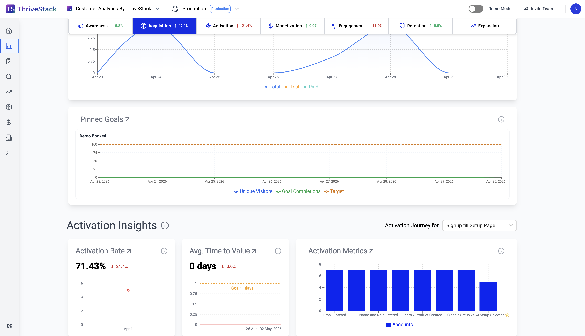

Intent:
Track how many visitors "Book a Demo" from your website so we'll create a goal.
Step 1: Open Goal Conversions and click Create Goal
Navigate to the Goal Conversions page in ThriveStack. Click + Create Goal in the top-right corner. A modal opens with fields for goal name, owner, target date, event filters, and a numeric completion target.


Goal Conversions page — click "+ Create Goal" to open the modalStep 2: Fill in goal details and choose an event
Give the goal a name (e.g. Demo Booked from Doc's Website), assign an owner, and pick a target date. Under Event Filters, type the event name you want to track (e.g. ts-demo-booked). If it doesn't exist yet, select + Create "ts-demo-booked" event from the dropdown. Set a numeric goal target and click Create Goal.


Filled form — event filter dropdown with create optionStep 3: Add the tracking attribute to your "Book a Demo" button
ThriveStack shows step-by-step Event Tracking Implementation instructions. Choose your platform — Manual Code, Webflow, or WordPress. For code-based sites, add a custom class and a thrivestack-event attribute to the button. The ThriveStack script fires the event automatically on click — no extra JavaScript required.


Add class & attribute to your button

Step 4: Deploy your changes so ThriveStack can detect the event in production
Once the button update is live on your website, go back to ThriveStack and click Start Verification. Then open your production site and click the tracked button once — ThriveStack will detect the event and mark verification as complete.


After deploying, click your "Book a demo" button on production to trigger the event

Click "Start Verification" to confirmStep 5: Verify the event and create the goal
ThriveStack listens for the event to fire. Once detected it shows Verification Complete — the event is confirmed and ready to track. Click Proceed to return to the goal form, then Create Goal to save. The goal immediately appears in the Goal Conversions list and starts collecting data.


Listening for events — verifying detection

Verification complete — click "Proceed" then "Create Goal"Step 6: View the goal on Goal Conversions
Your new goal appears in the list showing Unique Visitors, Repeat Visitors, Goal Completions, conversion rate, status, and progress toward the target. Click the goal row to open its detailed chart view with daily, 7d, 30d, 60d, and 90d breakdowns.


Goal appears in the list — click to open the detailed chart viewStep 7: Pin the goal to your Unified Dashboard
Hover over the goal card to reveal the action icons. Click the pin icon ("Pin to Dashboard") to surface it in the Pinned Goals section of your Unified Dashboard. Pinned goals show a live chart of Unique Visitors, Goal Completions, and Target at a glance.


Hover the goal card — click the pin icon

Unified Dashboard — Pinned Goals with live chartsYou're all set. Your goal is live, tracking conversions, and visible on the dashboard. ThriveStack updates Goal Completions in real time as visitors interact with the tracked button.